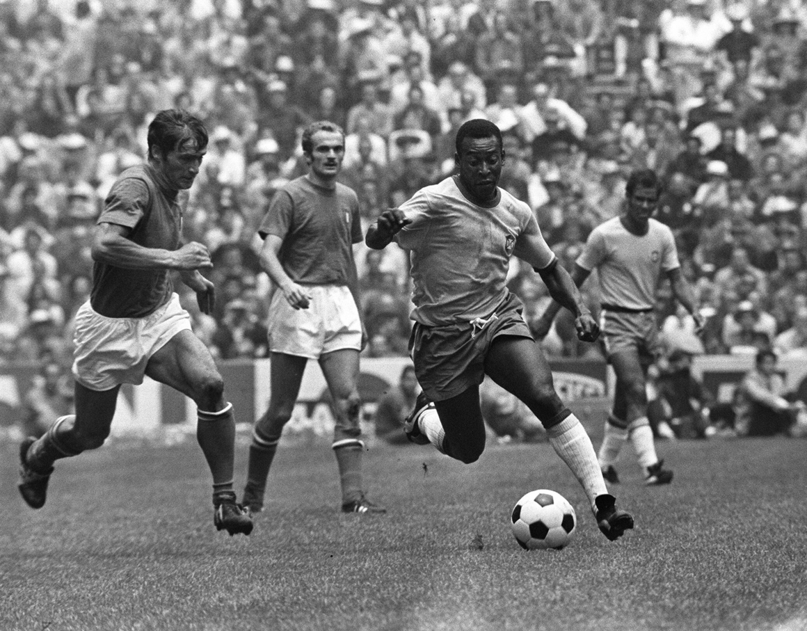

Edson Arantes do Nascimento
Más conocido como Pelé

Es famoso por su jogo bonito y por ser campeón en tres Copas del Mundo; la FIFA lo calificó como “el más
grande de todos”, razón por la que fue apodado ‘O Rei’ (El Rey)
He aquí una línea de tiempo de la trayectoria deportiva de Pelé:
- Nacido el Três Corações, Minas Gerais, 23 de octubre de 1940-São Paulo.
- Inició su carrera como profesional en 1956 en el Santos con solo 16 años.
- Ganó un título de la Supercopa de Campeones Intercontinentales, dos de la Copa Intercontinental, dos de la Copa Libertadores de América, seis del Brasileirão, cuatro del Torneo Río-São Paulo y diez del Campeonato Paulista.
- Máximo goleador de la historia del equipo paulista con 643 goles en 659 partidos, la segunda mayor cifra en un mismo club en partidos oficiales; sumando los encuentros no oficiales en el Santos convirtió 1091 goles en 1116 partidos.
- En 1975 fichó por el New York Cosmos de la North American Soccer League (NASL), donde conquistó un título de liga.
- Debutó con la selección brasileña en 1957 a los dieciséis años de edad y es, junto con Neymar, el máximo goleador de la Seleção con 77 goles. Acuñó el término «jogo bonito» para designar el estilo que practicó Brasil en los años que él integró su selección y disputó cuatro Copas Mundiales, de las que fue campeón en 1958, 1962 y 1970, siendo el futbolista que más veces y más joven la ha obtenido.
- Anotó un total de doce goles en Mundiales y fue elegido como mejor jugador en 1970 y el mejor jugador joven en 1958.
- En 1959 alcanzó el subcampeonato de la Copa América en su única participación en el certamen.
- Sus 1279 goles en 1363 partidos, incluyendo amistosos, son reconocidos como un récord mundial Guinness. El registro de goles oficiales realizado por la Federación Internacional de Historia y Estadística de Fútbol (IFFH) contabiliza para Pelé 762 goles en partidos oficiales, que considera récord mundial para el siglo xx, mientras que según los registros oficiales de la FIFA fue superado por Josef Bican con 805 goles en el mismo siglo. Otros registros, como el de la RSSSF, le han computado hasta 778 goles en partidos oficiales. Entre sus goles célebres se destacan el gol de los cuatro sombreros y el gol de placa.
- Se retiró del fútbol en 1977.
- Tras su retiro como jugador, fue actor y cantante. Fue nombrado Ciudadano del Mundo por la Organización de las Naciones Unidas (ONU) en 1977, Embajador para la Ecología y el Medio Ambiente por la ONU en 1992, Embajador de Educación, Ciencia, Cultura y Buenos Deseos de la Unesco en 1994, Ministro extraordinario de Deportes por el gobierno de Brasil entre 1994 y 1998, Caballero de Honor del Imperio Británico en 1997 y Embajador del Deporte en el Foro Económico Mundial de 2006
- En 1999 la Revista Olympic, órgano oficial del Movimiento Olímpico, lo distinguió como uno de los cinco «mejores atletas del siglo XX», siendo el único futbolista en alcanzar dicho reconocimiento.
- En 2000 fue elegido como el «mejor futbolista del siglo XX» con el 73 % en una votación realizada por la Comisión de Fútbol de la FIFA y los suscriptores de la Revista FIFA, por la Federación Internacional de Historia y Estadística de Fútbol, así como en una encuesta respondida por los ganadores del Balón de Oro.
- En 2004 la FIFA le encargó la elaboración de la lista de los «125 mejores futbolistas vivos» por la celebración de su centenario. A pesar de no haber ganado el Balón de Oro en su carrera, al que en aquella época solo podían optar europeos, la revista France Football le concedió uno honorífico por su gran trayectoria en la gala de premiación de 2013. En 2010 fue nombrado presidente honorario del refundado Cosmos.
- En 2016 el Comité Olímpico Internacional, en ocasión de los Juegos Olímpicos de Río de Janeiro, le otorgó la Orden Olímpica.
- En 2020 fue incluido como mediocentro ofensivo en el Dream Team histórico del Balón de Oro.
- Murió el 29 de diciembre de 2022.
"En la delantera me quedo con Pelé, el mejor jugador que ha visto el fútbol"
-- Frank Beckenbauer